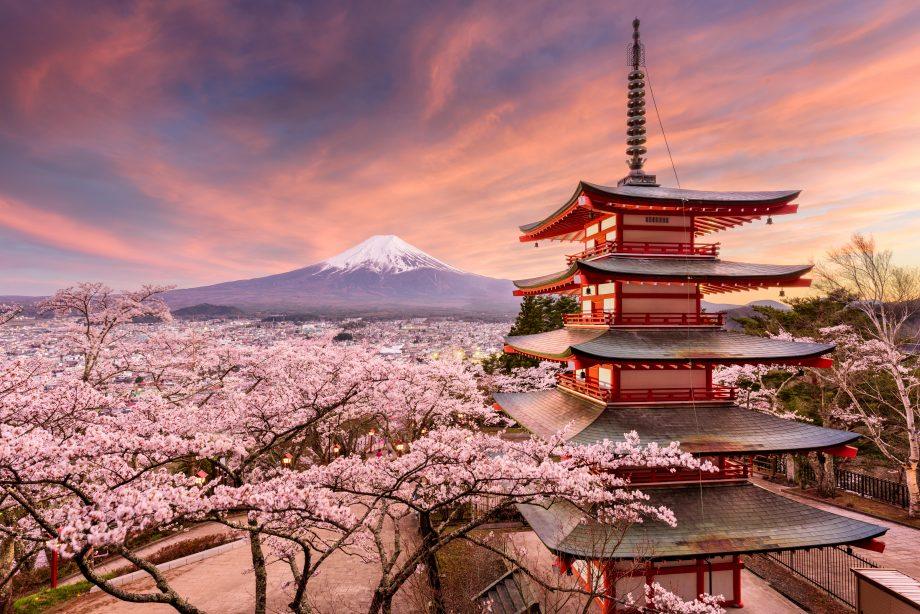

Márk
1996.07.25-én születtem Nyíregyházán. 3 éves koromig Beregszászi voltam, ekkor költöztünk fel Budapestre. Ezek után évekig utazgattam Kijevbe édesapámhoz, 1-2 évente. Többnyire hálókocsis vonatokkal utaztam. Ezekben az években tetszett meg nagyon az utazás érzése. Innentől mindig mindegy volt hova megyek. Ha volt társaságom (és az jó volt), akkor nem létezett rossz út.
Első nagyobb útjaim Kijevbe vezettek. Többnyire a várost láttam csak, és még nagyon gyerek voltam ahhoz, hogy igazán fel tudjam fogni mit "kell" látni ilyenkor.
A következő nagyobb útjaim Olaszországba vezettek, Dél-Olaszországba. Többnyire Nápolyban voltunk a családdal, de gyakran leutaztunk Calabriába, egy jóval délebbi részre, a csizma orrába.


Jelenleg pár éve szünetel az utazgatás, de rengeteg egyéb helyre is szeretnék eljutni, többnyire távol keletre. 2 nagyobb úticélom van: Dél-Korea és Japán (tipikus...). Szeretném bejárni mind a két országot, végigkóstolni minden ételkülönlegességüket, megszállni minden vendéglőben, megnézni egy cseresznyevirágzást, és kipróbálni minden melegvizes fürdőt.



Országon belüli utazásként egy táborozás van betervezve közeli barátokkal most tavaszra. Tűzrakás, sátorozás, szabadság. Pontos terv még nincs, rögtönzünk. :)